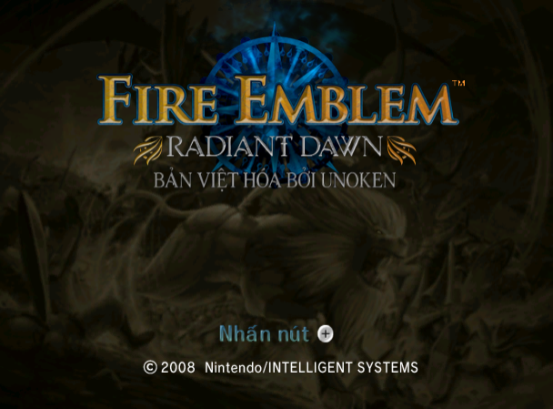
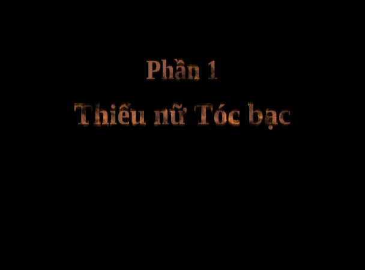
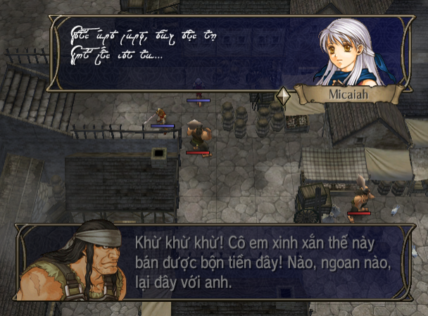
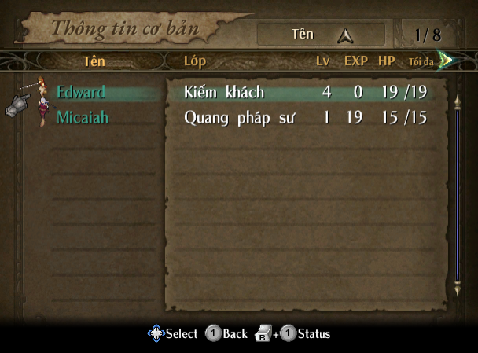
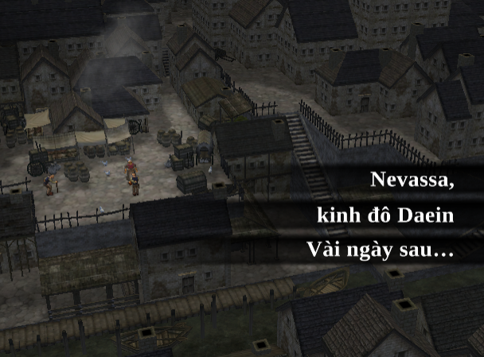
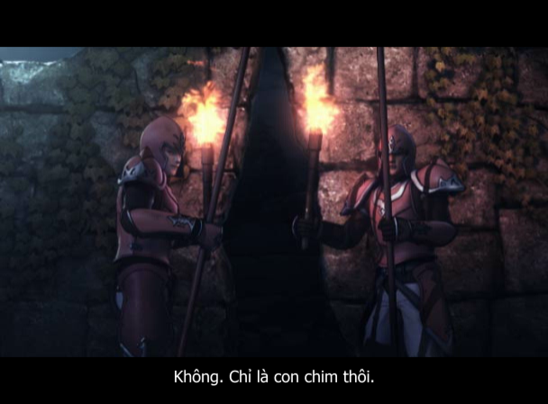

Giới thiệu
Fire Emblem: Radiant Dawn (2007) là game chiến thuật theo lượt trên Wii, phần tiếp theo của Path of Radiance. Ba năm sau cuộc chiến, Daein bại trận và sống dưới ách chiếm đóng của Begnion. Câu chuyện mở đầu với Micaiah, "Thiếu nữ Tóc bạc", cùng Đội Bình Minh, rồi đưa người chơi gặp lại Ike, Elincia và nhiều gương mặt quen thuộc của lục địa Tellius.
Dự án nối tiếp bản Việt hóa Path of Radiance (hoàn thành 25/10/2026), giữ cùng giọng dịch, cách xưng hô và thuật ngữ. Dự án chuyển toàn bộ game sang tiếng Việt: lời thoại, menu, và cả chữ vẽ sẵn trong ảnh.
- Font tiếng Việt đủ dấu cho cả màn hình 4:3 lẫn 16:9, ghép từ chính nét chữ của game.
- Chữ cổ của tộc Diệc vẫn hiện bằng hoa văn như bản gốc, nay có đủ dấu tiếng Việt.
- Chữ trong ảnh được vẽ lại: tên Phần, tên chương, banner lượt, menu, màn hình tiêu đề.
- Phim cắt cảnh có phụ đề tiếng Việt.
- Xưng hô theo từng cặp nhân vật, kế thừa bản FE9 cho các nhân vật cũ.
Khối lượng so với FE9
Radiant Dawn lớn hơn Path of Radiance ở hầu hết mọi mặt: kịch bản dài gấp rưỡi, số mục chữ và số chữ vẽ trong ảnh gấp đôi, lại thêm màn hình 16:9.
| FE9 Path of Radiance | FE10 Radiant Dawn | ||
|---|---|---|---|
| Kịch bản tiếng Anh | khoảng 180.000 từ | khoảng 268.000 từ gấp 1,5 | gấp 1,5 |
| Số mục chữ cần dịch | 5.465 | 11.489 gấp 2,1 | gấp 2,1 |
| Chương (tính cả Mở đầu, Hồi kết) | 31 | 42, chia 4 Phần gấp 1,4 | gấp 1,4 |
| Vùng chữ vẽ sẵn trong ảnh | 320 | 688 gấp 2,2 | gấp 2,2 |
| Khổ màn hình | 4:3 | 4:3 và 16:9: mọi font chữ, phần lớn ảnh phải làm hai bản | |
| Hệ máy | GameCube | Wii: đĩa mã hóa, có thêm banner đĩa, chạy được bằng Riivolution |
Tiến độ
- Phần 1Thiếu nữ Tóc bạc · Micaiah và Đội Bình Minh, 11 chương · 21.853 từChưa bắt đầu
- Phần 2Quốc gia và Quân vương · Elincia và Crimea, 5 chương · 12.715 từChưa bắt đầu
- Phần 3Khi lời thề giao nhau · Ike và Đoàn lính đánh thuê Greil, 15 chương · 53.105 từChưa bắt đầu
- Phần 4Thần và Người · Tháp Thiên Dẫn, 6 chương và 5 màn Hồi kết · 46.165 từChưa bắt đầu
- Hỗ trợHội thoại hỗ trợ · câu hỗ trợ giữa các nhân vật · 88.485 từĐang dịch · 50%
- MenuGiao diện · menu, vật phẩm, kỹ năng, tên nhân vật và lớp · 19.111 từĐang dịch · 86%
- KhácHướng dẫn, từ điển, hậu truyện · hướng dẫn chơi, từ điển, hậu truyện, danh sách nhân sự · 24.551 từĐang dịch · 87%
- v1.0Phát hành bản vá · công khai một lần khi đã dịch xong toàn bộChưa phát hành
Hình ảnh






Nhật ký
07/11/2026 — Hướng dẫn, từ điển
- Dịch xong toàn bộ hướng dẫn chơi của Anna, cả các thoại làm mẫu; chữ "Minh họa" trên màn hình hướng dẫn vẽ lại theo kiểu chữ gốc.
- Dịch xong từ điển trong game: nhân vật, quốc gia, thuật ngữ. Hai thế hệ Tứ Kỵ sĩ dùng hai tên riêng như bản Nhật: Tứ Kỵ sĩ Daein thời FE9 và Tứ Kỵ sĩ Kiên Trung bây giờ.
- Dịch xong màn giới thiệu lớp nhân vật và danh sách nhân sự cuối game.
- Chạy thử bản dựng trên Dolphin và sửa các lỗi hiển thị: chữ tràn khung, chữ đè nhau, "No Data" ở màn hình chọn file làm lại thành chữ "Trống" khắc chìm như bản gốc, dòng "Bản Việt hóa bởi Unoken" trên màn hình tiêu đề căn lại cho cân.
- Sau phần này sẽ bắt đầu dịch cốt truyện, từ Mở đầu Phần 1.
05/11 – 07/11/2026 — Giao diện
- Dịch gần xong phần giao diện: tên vật phẩm, kỹ năng, lớp nhân vật; menu hệ thống, Tùy chọn, dữ liệu lưu; bản đồ, điều kiện thắng thua; căn cứ, cửa hàng, lò rèn, kho đồ; mô tả vũ khí, vật phẩm, kỹ năng, lớp nhân vật và các dòng trợ giúp.
- Người bán hàng ở căn cứ giữ giọng từng người như bản FE9; thêm hai người quân nhu mới của Daein và Crimea.
- Hội thoại hỗ trợ giữa các nhân vật cũ có câu tiếng Anh giống hệt FE9 được dùng lại bản dịch FE9, sẽ rà lại theo bối cảnh khi tới Phần 3.
- Đổi thứ tự: dịch xong giao diện, hướng dẫn, từ điển rồi mới tới cốt truyện, để thuật ngữ trong lời thoại khớp với menu. Mở đầu Phần 1 trước đây là bản dịch thử, sẽ dịch lại từ đầu cùng phần cốt truyện nên tạm không tính vào tiến độ.
- Chuẩn bị sẵn hai cách cài bản vá (Riivolution và bản vá đĩa), đã chạy thử trên Dolphin.
04/11/2026 — Dấu ấn bản Việt hóa, dịch xong Mở đầu
- Màn hình tiêu đề có thêm dòng "Bản Việt hóa bởi Unoken" vẽ theo kiểu chữ của "Radiant Dawn"; màn hình nhắc đeo dây Wii Remote ghi phiên bản và địa chỉ trang này.
- Banner đĩa trên menu Wii, banner file lưu, danh sách nhân sự cuối game ghi tên bản Việt hóa.
- Dịch xong Mở đầu của Phần 1, "Dưới bầu trời xám".
- Mở trang tiến độ.
28/10 – 03/11/2026 — Chữ trong ảnh
- Vẽ lại hơn 600 ảnh có chữ: tên Phần, chữ dẫn cảnh, tên chương, banner lượt, Lên cấp, Thăng chức, menu và bảng chỉ số, màn hình lưu, xếp hạng.
- Phụ đề tiếng Việt cho phim cắt cảnh, lời kết cuối game.
- Dịch tên chương và tên 109 lớp nhân vật, cả ở màn giới thiệu lớp.
26/10 – 28/10/2026 — Nền móng
- Bắt đầu dự án, một ngày sau khi bản Việt hóa FE9 hoàn thành.
- Công cụ đọc và ghi lời thoại, dựng lại đĩa để chạy thử trên Dolphin.
- Font tiếng Việt đủ dấu cho lời thoại, menu, danh sách nhân sự, ở cả màn hình 4:3 và 16:9; chữ cổ của tộc Diệc có dấu.
- Tài liệu dịch: văn phong, xưng hô, thuật ngữ kế thừa bản FE9, hồ sơ các nhân vật mới.
Khi phát hành
- Dùng với ảnh đĩa bản châu Âu (PAL, mã RFEP01) của chính bạn. Bản Mỹ và bản Nhật không dùng được.
- Chơi bằng Dolphin trên máy tính hoặc Android, hoặc trên Wii thật qua Riivolution.
- Phát hành dạng file patch (xdelta để patch ISO, và gói Riivolution), không phát hành game đã patch.
Hướng dẫn patch chi tiết sẽ có ở trang này khi phát hành.
Góp ý
Muốn góp ý về cách dịch tên, thuật ngữ, hay góp sức cho dự án? Hãy mở một issue trên GitHub.
Thực hiện & cảm ơn
- Thực hiện: Unoken
- Dịch thuật, công cụ, font tiếng Việt, chữ trong ảnh, đóng gói.
- Trợ lý AI: Claude (Anthropic) và Gemini (Google)
- Bản Việt hóa được làm với sự hỗ trợ của AI trong dịch thuật, viết công cụ và rà soát. Mọi lựa chọn về câu chữ, xưng hô và thuật ngữ đều do Unoken quyết định và kiểm tra trong game.
- Cảm ơn: font chữ trong ảnh
- Tinos, Gelasio, EB Garamond, Arsenal, Philosopher, M PLUS Rounded 1c, Arimo, Public Sans: dùng theo giấy phép SIL Open Font License 1.1. Font trong lời thoại ghép từ nét chữ gốc của game.
- Cảm ơn: công cụ
- Dolphin (trình giả lập, tài liệu định dạng đĩa Wii và RVZ).
Miễn trừ trách nhiệm
Đây là dự án phi lợi nhuận của người hâm mộ, không liên quan, không được tài trợ hay chấp thuận bởi Nintendo hay Intelligent Systems. Fire Emblem và mọi nhân vật, hình ảnh liên quan là tài sản của chủ sở hữu tương ứng. Dự án không phân phối game hay dữ liệu đĩa gốc; bản patch khi phát hành chỉ dùng được với bản game mà bạn sở hữu hợp pháp.
Trang đếm lượt truy cập ẩn danh bằng GoatCounter (không dùng cookie, không lưu địa chỉ IP) để biết có bao nhiêu người quan tâm tới dự án.